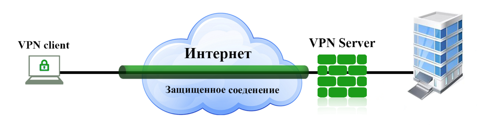

DomashkaPoElectivu

- Работы Дж. Фон Неймана по теории вычислительных машин
- История создания и развития ЭВМ. Поколения
- Микропроцессоры, история создания, миспользование в современном мире
- Cупер-ЭВМ назначение, возможности, принципы построения
- Проект 5-го поколения: замысел и реальность
- Основные правила компьютерной безопасности
Мы пользуемся интернетом, чтобы получить доступ к социальным сетям, онлайн-обучению, удаленной работе и всевозможным развлечениям. Но широкое использование не означает, что вы хорошо осведомлены о кибербезопасности. Хорошая новость заключается в том, что существует множество способов обезопасить себя в сети. Чтобы помочь вам в этом вопросе, мы собрали несколько лучших советов.
Основные правила безопасного поведения в интернете
Храните конфиденциальные данные в автономном режиме.
Киберпреступники не могут получить доступ к вашей информации, если ее нет в интернете. Вот почему хранение важных документов в офлайне – лучший способ их защитить.
Некоторые данные, например ваши серия и номер паспорта, никогда не должны попадать в интернет. Однако, если вам все же нужно поделиться ими, обязательно отправьте его как вложение по email. При этом не стесняйтесь зашифровать файл перед отправкой.
Проверяйте надежность посещаемого сайта.
Чтобы понять, надежен ли сайт, посмотрите на адресную строку. В начале у нее должен быть небольшой замок – это означает, что соединение зашифровано.
Далее изучите внешний вид сайта. Вот некоторые критерии, указывающие на безопасность его использования:
- страницы выглядят аккуратно и без ошибок,
- грамматика в основном тексте и адресной строке согласована,
- все изображения соответствуют ширине экрана,
- реклама выглядит органично и не заслоняет основной контент.
Если страница соответствует всем этим критериям, то, скорее всего, сайт будет безопасным в использовании.

Используйте надежные пароли.
Использование надежных уникальных паролей обеспечивает хорошую онлайн-защиту. Они должны содержать не менее 12 символов и состоять из букв (верхнего и нижнего регистра), цифр и специальных символов.
Если вы не хотите думать о комбинации символов для своего пароля, попробуйте использовать один из онлайн-генераторов паролей.
Используйте двухфакторную аутентификацию.
Двухфакторная аутентификация используется для обеспечения дополнительной защиты вашей учетной записи. При ее применении вы должны ввести не только правильный пароль, но и дополнительный код, сгенерированный ранее или отправленный на ваше устройство. Если кто-то просто получит пароль от вашей учетной записи, ваш профиль для него не будет доступен без ввода этого дополнительного кода.
Избегайте подозрительных ссылок.
Лучше избегать определенного вида контента: подозрительных ссылок из ненадежных источников и спама. К этой категории относятся онлайн-викторины, объявления с кликбейтными заголовками, «бесплатные» предложения или нежелательная реклама. Все они будут навязчиво побуждать вас щелкнуть по ссылке или открыть их.
Если это вредоносное вложение, отправленное по электронной почте, в тексте не будет упоминания файла. Вместо этого в сообщении просто отразится что-то вроде «откройте прикрепленный файл и сообщите мне, что вы думаете».
Находясь на сайте, перед тем как кликнуть, убедитесь, что текст и содержимое ссылки относятся к одной теме. То есть если вы перейдете по ссылке, чтобы узнать больше о белых медведях, и получите «историю успеха» о знаменитости, которая похудела в одночасье, вместо арктического пейзажа, то лучше скорее покинуть страницу.
Следите за обновлениями на компьютере.
Важно использовать последние версии операционной системы и приложений. Особенно если эти приложения содержат информацию о ваших платежах, состоянии здоровья или другие конфиденциальные данные. Разработчики постоянно трудятся над улучшением безопасности продуктов, отслеживая последние угрозы и устанавливая исправления в случае обнаружения уязвимостей. Так что регулярно обновляйте ПО на своих устройствах, чтобы обезопасить себя.
Остерегайтесь бесплатного Wi-Fi и загрузок.
Бесплатные загрузки, онлайн-сервисы или сети Wi-Fi являются наиболее распространенными источниками проблем с онлайн-безопасностью. Если вы решите использовать бесплатное решение, убедитесь, что оно имеет надежную репутацию: изучите название службы или программного обеспечения, и вы, вероятно, найдете отзывы о том, как они работают.
Использование бесплатного Wi-Fi также не всегда безопасно. Но иногда нам нужно срочно выйти в интернет через общедоступные точки. Используя их, избегайте доступа к своим банковским счетам и старайтесь не совершать покупки через бесплатный Wi-Fi. Если вам все же нужно это сделать, используйте программное обеспечение VPN, чтобы получить некоторую защиту данных, которые вы отправляете. Если это не срочно, то любые важные операции лучше отложить до возвращения домой.
Дважды проверяйте информацию, полученную в сети.
Легко потеряться в потоке онлайн-информации, с которой мы сталкиваемся каждый день. Если вы обнаружите что-то сомнительное, проведите собственное исследование, чтобы узнать правду, или, по крайней мере, составить собственное мнение по какому-либо вопросу. На надежных сайтах должны быть ссылки на первоисточники информации. Подозрительные страницы вообще не будут содержать никаких ссылок по теме.
Защитите свое интернет-соединение с помощью VPN.
VPN делает ваше соединение приватным, изменяя IP-адрес. Он также скрывает конфиденциальные данные, которые вы отправляете. К ним относятся банковские реквизиты, которые вы вводите при совершении покупок в интернете, и другая личная информация, которая может быть скомпрометирована.
Теперь, когда вы знаете, как защитить себя в интернете, пришло время поделиться основной информацией с ребенком. Эти советы также полезны для других членов семьи – менее опытных пользователей, например пожилых родственников.
5 правил, которые научат ваших детей тому, как оставаться в безопасности в интернете
Объясните ребенку, что такое цифровой след. Вместе с ним найдите информацию об актере, который ему нравится, и обсудите результаты. Поговорите о том, что другие могут узнать о человеке из этих результатов и как люди оставляют цифровой след – сознательно или нет.
Создайте семейные правила для общедоступного содержимого. Четко определите, какой контент следует и не следует публиковать в интернете. Например, любая личная информация, такая как домашний адрес и номер телефона, должны быть одними из первых в списке запретов к публикации. Помогите своему ребенку понять, что такое фишинг. Объясните ему, как избежать сообщений, ссылок или электронных писем от незнакомцев, которые запрашивают информацию об учетной записи или содержат странные вложения.
Научите ребенка создавать надежные пароли. Покажите, что эффективный код доступа должен содержать разные символы, и предупредите, что его нельзя никому сообщать. Поощряйте позитивное общение в интернете. Объясните ребенку, как важно вести себя вежливо и относиться к другим так, как бы он хотел, чтобы относились к нему. Это важно как в физическом, так и онлайн-мире.
В заключение: памятка по правилам безопасности в интернете
Чтобы избежать сомнительных или опасных ситуаций при работе в интернете, соблюдайте главные правила безопасности:
- Храните конфиденциальные данные в автономном режиме.
- Проверяйте надежность сайтов.
- Защитите свои учетные записи с помощью надежных паролей и двухфакторной аутентификации.
- Не нажимайте на подозрительные ссылки.
- Не открывайте вложения от неизвестных отправителей.
- Обновляйте свое устройство и приложения.
- Используйте общедоступный Wi-Fi с умом.
- Дважды проверяйте достоверность информации онлайн.
- Используйте VPN, чтобы скрыть свою активность в интернете.
- Расскажите ребенку о цифровом следе.
- Создайте общие семейные правила для пользования интернетом.
- Поговорите о фишинге со своими детьми.
- Научите детей защищать свои онлайн-аккаунты.
- Помните об онлайн-этикете.